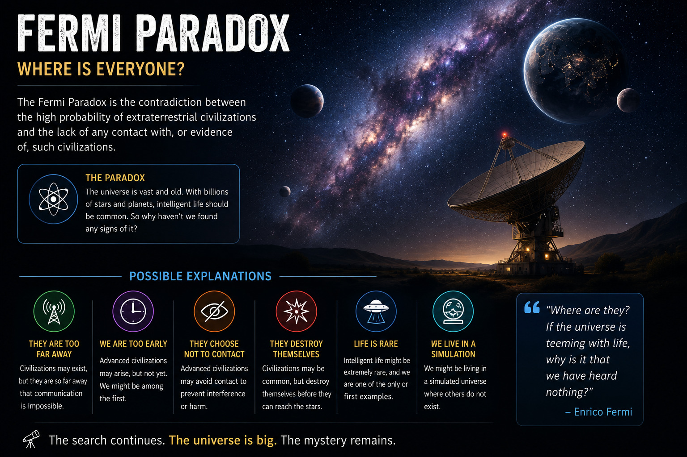

Where Are All the Aliens?
The Fermi Paradox asks why we have not found evidence of intelligent alien civilizations, even though the universe contains billions of stars and planets.
Scientists have proposed many possible explanations, including the idea that intelligent life is extremely rare or that civilizations do not survive long enough to communicate.
